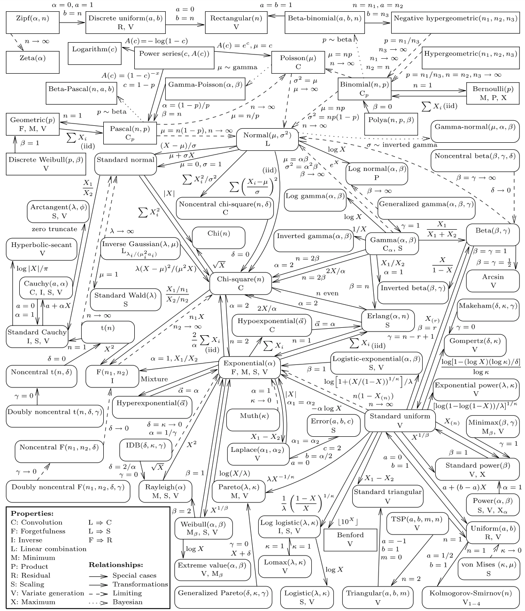

Probability distributions
Contents
Probability distributions#
We have already seen how different probability distributions are related: if we repeat Bernoulli trials, the resulting random variable has a binomial distribution. In the limit as \(n\) increases, this gives us the normal distribution.
Many other probability distributions can be constructed by combining random variables in different ways. These various distributions can be useful for describing all kinds of real-world phenomena.
In this section we focus on just a handful of distributions that are especially relevent when working with financial data.
Poisson distribution#
Consider again the binomial distribution as \(n\to\infty\), but assume that the probability \(p\) is defined such that the product of \(n\) and \(p\) remains constant. In particular, assume that for any \(n\),
for some constant \(\lambda > 0\). In other words, for each \(n\), we let \(p_{n} = \frac{\lambda}{n}\) be a sequence of probabilities. It can be shown that
The function in the limit gives the PMF of a random variable \(X\) with a Poisson distribution:
Both panels of the figure below show a Poisson distribution with \(\lambda=5\), along with a Binomial distribution. In both panels, \(np=5\), but in the left panel \(n=25\) while in the right \(n=250\). It is clear that the Binomial probabilities get closer to the Poisson probabilities with the larger value of \(n\).
λ=5
domain = np.arange(16)
p_poiss = scs.poisson.pmf(domain, λ)
fig, axes = plt.subplots(1, 2, figsize=(16,6))
for n,ax in zip([25,250], axes.ravel()):
p = λ / n
p_binom = scs.binom(n, p).pmf(domain)
ax.bar(domain, p_binom, alpha=0.75, align='center', label='$B({},{})$'.format(p,n))
ax.plot(domain, p_poiss, 'o', color='orange', label='$Pois({})$'.format(λ))
ax.legend(loc='upper right')
ax.set_xlim(-1,None)
ax.set_ylim(0,0.2)
ax.grid(alpha=0.1)
plt.show()

The Poisson distribution is useful for modelling events that occur rarely in a short interval of time, but where there are many such intervals. Examples include:
how many creditors may default on a loan in a year;
how many car accidents occur in a group of insured drivers;
how many customers enter a store in a day;
how many people call a customer support line in an hour.
The parameter \(\lambda > 0\) gives the rate per period at which events are expected to occur. It equals both the mean and the variance of the distribution.
print('E(X) = {}'.format(scs.poisson(λ).mean()))
print('Var(X) = {}'.format(scs.poisson(λ).var()))
E(X) = 5.0
Var(X) = 5.0
Extra credit
To find the expected value of a Poisson random variable \(X\), start with the definition of expectation:
The infinite sum is
which can be seen by taking a Taylor series of \(e^x\) at zero. Therefore,
To find the variance, we can find \(\E(X^2)\) using a similar approach:
The summation term is
Therefore,
so
x = np.arange(0, 20)
fig, (ax1, ax2) = plt.subplots(1, 2, figsize=(16,6))
prop_cycle = plt.rcParams['axes.prop_cycle']
colors = prop_cycle.by_key()['color']
for i,λ in enumerate([1, 4.5, 12]):
p = scs.poisson.pmf(x, λ)
ax1.plot(x, p, 'o', label=f'$\lambda={λ}$', zorder=3)
ax1.plot(x, p, ':', color=colors[i])
P = scs.poisson.cdf(x, λ)
ax2.scatter(x, P, lw=3, label=f'$\lambda={λ}$')
for k in range(1,len(x)):
ax2.plot([k-1,k], [P[k-1],P[k-1]], '-', color=colors[i])
for ax in [ax1, ax2]:
ax.grid(alpha=0.3)
ax.set_xticks([0, 5, 10, 15, 20])
ax.set_xlabel('k')
ax1.set_title('Probability mass function')
ax1.legend(loc='upper right')
ax1.set_ylabel('P(X=k)')
ax2.set_title('Cumulative distribution function')
ax2.legend(loc='lower right')
ax2.set_ylabel('P(X≤k)')
ax2.set_yticks([0, .25, .5, .75, 1])
plt.show()

Note that the PMF is define only over the integers; the lines between the dots are simply visual aids. Note also that \(\lambda\) can be any positive real number.
Log-normal distribution#
Suppose \(Y \sim \N(\mu,\sigma^2)\), and define
Then \(X\) has a Log-normal distribution with PDF
The distribution is defined only for \(x>0\). (Given its definition, regardless of the realization of \(Y\), the value for \(X\) will always be positive.)
The plots below show PDFs and CDFs for log-normal random variables as we vary \(\sigma\) but fix \(\mu=0\).
x = np.linspace(0, 5, 250)
fig, (ax1, ax2) = plt.subplots(1, 2, figsize=(16,6))
for σ in [0.25, 0.5, 1, 2]:
ax1.plot(x, scs.lognorm.pdf(x, s=σ), lw=2, label='$\sigma={}$'.format(σ))
ax2.plot(x, scs.lognorm.cdf(x, s=σ), lw=2, label='$\sigma={}$'.format(σ))
ax1.legend(loc='upper right')
ax1.grid(alpha=0.3)
ax2.grid(alpha=0.3)
ax1.set_title('Probability density function')
ax2.set_title('Cumulative distribution function')
ax2.set_yticks([0, .25, .5, .75, 1])
plt.show()

Notice that despite holding \(\mu\) constant, the location of the PDF shifts as we change \(\sigma\). The mean of the distribution must therefore depend also on \(\sigma\), and in fact is given by
Extra credit
The math behind this result is a little tricky, but really we just need to remember how to complete the square. In 2020 a professor at Carnegie Mellon shared a new method to complete a square, which modifies a technique that has been known for thousands of years.)
Start with the definition of expected value:
Here’s where we complete the square. We can write
Therefore,
Here, we’ve used the fact that the function over the brace is the PDF of a normal distribution, and therefore integrating over the whole real line equals one. (This PDF is of a random variable that has a mean of \((\mu + \sigma)^2\) but that is irrelevant; all that matters is that it is a PDF and therefore the integral must be one.)
σ = 1
np.exp(σ**2 / 2) # μ=0
1.6487212707001282
scs.lognorm(s=1).mean()
1.6487212707001282
The median is \(e^{\mu}\), which can easily be seen from the plots of the CDFs above.
scs.lognorm(s=1).median()
1.0
The log-normal distribution is often used in various financial applications. One reason is that, since the price of a stock can never be negative, it makes sense to model the price with a distribution that also never gives negative values.
Chi-squared distribution#
Suppose \(Z_i \sim \N(0,1)\) and we calculate
Then \(X\) follows a chi-squared distribution with \(k\) degrees of freedom, \(X\sim \chi^2_k\).
x = np.linspace(0, 25, 250)
fig, ax = plt.subplots(figsize=(12,6))
for df1 in [3, 5, 10]:
ax.plot(x, scs.chi2.pdf(x, df1), lw=2, label='$k={}$'.format(df1))
ax.grid(alpha=0.3)
ax.set_title('$\chi^2(k)$')
ax.legend(loc='upper right')
plt.show()

If \(X\sim\chi^2(k)\) then \(\E(X)=k\) and \(\var(X)=2k.\)
Student’s \(t\) distribution#
Suppose \(Z \sim \N(0,1)\) and \(Q \sim \chi^2_{\nu}\). Then
follows a Student’s \(t\) distribution with \(\nu\) degrees of freedom. Its PDF is
where the degrees of freedom parameter \(\nu>0\) (the Greek letter nu) controls the shape of the distribution.
x = np.linspace(-5, 5, 100)
fig, ax = plt.subplots(figsize=(12,6))
ax.plot(x, scs.norm.pdf(x), 'k--', lw=1, label='$N(0,1)$')
for ν in [1,2,5,50]:
ax.plot(x, scs.t.pdf(x, ν), 'o-', alpha=0.4, lw=2, label='$t({})$'.format(ν))
ax.legend(loc='upper left')
ax.grid(alpha=0.3)
ax.set_xlim((-5,5))
plt.show()

Note that as \(\nu \rightarrow \infty\), the distribution converges to a standard normal distribution.
Extra credit
The proof of this convergence is relatively easy if we use the observation that
We have
which is the PDF of the standard normal distribution.
Since it has more mass in the extremes at extreme values than does a normal distribution, the \(t\) distribution is said to have fat tails.
A random variable \(X \sim t(\nu)\) has mean
and variance
\(F\) distribution#
Given two independent chi-square distributed random variables, \(Q_1\) and \(Q_2\), with \(k_1\) and \(k_2\) degrees of freedom, respectively, the ratio
follows an \(F\) distribution with \(k_1\) and \(k_2\) degrees of freedom.
x = np.linspace(0, 5, 500)
fig, ax = plt.subplots(figsize=(12,6))
k2 = 5
for k1 in [3, 5, 10]:
ax.plot(x, scs.f.pdf(x, k1, k2), lw=2, label='$k_1={}, k_2={}$'.format(k1, k2))
ax.grid(alpha=0.3)
ax.set_title('$F(k_1,k_2)$')
ax.legend(loc='upper right')
plt.show()

Exercise
Use a simulation to verify the claimed relation between a standard normal distribution, the \(\chi^2\) distribution, and the \(F\) distribution.
Start by drawing 10 realizations of \(X \sim \N(0,1).\) Calculate \(S = \sum x_i^2\). Repeat this 1000 times. Show that the mean and variance of are close to the what you would expect from theory. You don’t actually have to repeat the 10 draws 1000 times. You can draw a \(1000\times 10\) array and then calculate the sum of squares within each row to get 1000 values and then calulate the mean and variance of those.
Now create 1000 draws from a different chi-square by taking the sum of squares of 15 draws from a standard normal. For each of these 1000 examples, calculate the ratio \(\frac{S_{1}/k_{1}}{S_{2}/k_{2}}\) where \(k_1\) and \(k_2\) are the corresponding degrees of freedom. This will give you 1000 draws from an \(F\) distribution. Show that the mean and variance also match what is predicted by theory.
F = (X1/10) / (X2/15)
F.mean(), F.var()
(1.1438112865369205, 0.5380713620827265)
15 / 13
1.1538461538461537
(2 * 15**2 * (15 + 10 - 2)) / (10 * (15-2)**2 * (15-4))
0.556750941366326
Other distributions#
Many probability distributions have been developed by researchers seeking to describe various probabilistic phenomena. As we’ve seen with the connections between the several distributions above, distributions are usually related to others by making particular assumptions or by taking limits of parameters. The figure below, from Leemis and McQueston [2008], shows the relationships between many (but by no means all) probability distributions. You can see, for example, that both the Poisson and Normal are limiting distributions of the Binomial distribution.
{kind=link}